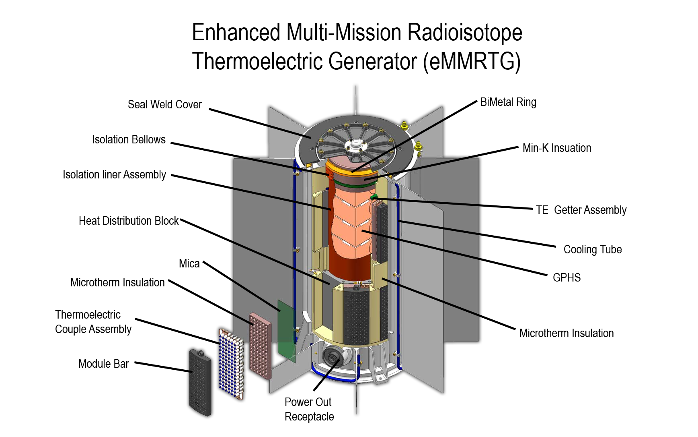

Nuclear Energy
Basics of Nuclear ReactorsA nuclear reactor produces electricity by containing and controlling a nuclear fission or fusion recation and using the evergy produced to heat water into steam. The steam is then used to move a turbine attached to a generator, which produces an electrical current. After the steam has been run through the turbine, it is piped away from the reactor and turbine and into a condenser. The condeser is attached to a cooling tower, which uses external water sources to reduce the temperature of the steam to convert it back into liquid water, without releasing radioactive material or contaminated water. Once the water is cooled, it is cycled back into the reactor to be used again. The cooling tower and condenser system are crucial to the safe operation of a nuclear power facility. Without them, the reactor coolant's pressure would build to explosive levels, and breach the reactor wall; releasing contaminated water vapor and nuclear fuel into the atmosphere. |
||||||||||||||||||||||||||||||||||||||||||||||||||||||||||||||||||||||||||||||||||||||||||||||||||||||||||||||||||||||||||||||||||||||||||||||||||||||||||||||||||||||||||||||||||||||||||||||||||||||||||||||||||||||||||||||||||||||||||||||||||||||||||||||||||||||||||||||||||||||||||||||||||||||||||||||||||||||||||||||||||||||||||||||||||||||||||||||||||||||||||||||||||||||||||||||||||||||||||||||||||||||||||||||||||||||||||||||||||||||||||||||||||||||||||||||||||||||||||||||||||||||||||||||||||||||||||||||||||||||||||||||||||||||||||||||||||||||||||||||||||||||||||||||||||||||||||||||||||||||||||||||||||||||||||||||||||||||||||||||||||||||||||
|

Another type of nuclear power generator is the or RTG. Instead of relying on fission or fusion, it produces energy by exploiting radioactive decay. Since an RTG doesn't need an external power source or a pressure vessel, it can be much lighter and much smaller. These qualities make RTGs an ideal power source for spacecraft and satellites; like Voyager I and Voyager II. |
||||||||||||||||||||||||||||||||||||||||||||||||||||||||||||||||||||||||||||||||||||||||||||||||||||||||||||||||||||||||||||||||||||||||||||||||||||||||||||||||||||||||||||||||||||||||||||||||||||||||||||||||||||||||||||||||||||||||||||||||||||||||||||||||||||||||||||||||||||||||||||||||||||||||||||||||||||||||||||||||||||||||||||||||||||||||||||||||||||||||||||||||||||||||||||||||||||||||||||||||||||||||||||||||||||||||||||||||||||||||||||||||||||||||||||||||||||||||||||||||||||||||||||||||||||||||||||||||||||||||||||||||||||||||||||||||||||||||||||||||||||||||||||||||||||||||||||||||||||||||||||||||||||||||||||||||||||||||||||||||||||||||||
SafetyReactor safety is obviously a primary concern. If a reactor malfunctions or experiences an meltdown, the ramifications are typically very detrimental to the surrounding ecosystem and human settlements. Numerous failsafes exist to prevent reactor malfunctions. Chief among them are temperature monitoring systems that safely shut down the reactor to prevent steam explosions and fuel ejections. Modern reactors also have emergency cooling systems to prevent or mitigate meltdows and thermal events. In the event of a reactor overheating, the reactor can be flushed with reserve coolant to rapidly reduce core temperatures. Additionally, for fission reactors, the fuel rods are sequestered from the rest of the reator core to prevent further fission reactions; reducing the overall thermal load. |
||||||||||||||||||||||||||||||||||||||||||||||||||||||||||||||||||||||||||||||||||||||||||||||||||||||||||||||||||||||||||||||||||||||||||||||||||||||||||||||||||||||||||||||||||||||||||||||||||||||||||||||||||||||||||||||||||||||||||||||||||||||||||||||||||||||||||||||||||||||||||||||||||||||||||||||||||||||||||||||||||||||||||||||||||||||||||||||||||||||||||||||||||||||||||||||||||||||||||||||||||||||||||||||||||||||||||||||||||||||||||||||||||||||||||||||||||||||||||||||||||||||||||||||||||||||||||||||||||||||||||||||||||||||||||||||||||||||||||||||||||||||||||||||||||||||||||||||||||||||||||||||||||||||||||||||||||||||||||||||||||||||||||
Environmental ImpactNuclear power generation produce electricity without carbon emmissions. Typically, reactors use Uranium-235 or Plutonium-239 as their fuel. U-235 is a rare isotope of natural uranium that is fissile (useable for fission reactions) and stable, when mixed into fuel pellets. The expenditure of U-235 to make electrical power produces no greenhouse gasses and any water released or steam generated is free of radioactive contaminants. P-239 is a less stable (and highly weaponizanble) fuel source. As such, it is rarely used in power generation. In contrast, P-238 is a very safe fuel for use in RTGs. Its half-life makes it the ideal candidate fuel for such aplications. Spent fuel, and the associated assemblies, must be stored in deep reservoirs to “cool” for several years. This cooling is both to control heat production and to prevent the release of radiation into the surrounding environment. Once cooled, fuel assemblies are moved into on-site dry cask storage. A dry cask is a steel and concrete container that block radiation and prevents the fuel from being moved by unauthorized persons. |
||||||||||||||||||||||||||||||||||||||||||||||||||||||||||||||||||||||||||||||||||||||||||||||||||||||||||||||||||||||||||||||||||||||||||||||||||||||||||||||||||||||||||||||||||||||||||||||||||||||||||||||||||||||||||||||||||||||||||||||||||||||||||||||||||||||||||||||||||||||||||||||||||||||||||||||||||||||||||||||||||||||||||||||||||||||||||||||||||||||||||||||||||||||||||||||||||||||||||||||||||||||||||||||||||||||||||||||||||||||||||||||||||||||||||||||||||||||||||||||||||||||||||||||||||||||||||||||||||||||||||||||||||||||||||||||||||||||||||||||||||||||||||||||||||||||||||||||||||||||||||||||||||||||||||||||||||||||||||||||||||||||||||